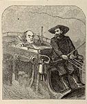
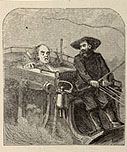
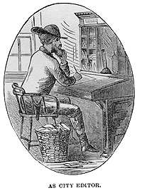
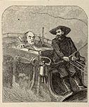

 
Writing ItThe popularity of Innocents Abroad made both MT and Elisha Bliss, his publisher, anxious to produce a sequel. "I mean to write another book during the summer," MT wrote Mrs. Fairbanks in early January, 1870; "[Innocents] has proven such a surprising success that I feel encouraged." He did in fact begin his second book in August, but he didn't finish it until October, 1871 -- after a long struggle with a series of family medical problems and his own doubts about his ability to write another best-seller. It wasn't until July, 1870, when he signed a contract to write a new 600-page subscription book, that he chose a subject: he decided "to do up Nevada and California" in a text that, like his first book, would combine travel, information and humor with copious illustrations. In the flush times of starting it, he was enthusiastic, telling Bliss in September that this "book will jump right straight into contintental celebrity." Deaths in his family, even one in his own house, the premature birth of his first child and his wife's near-fatal bout with typhoid, though, probably kept him from writing much until the spring, 1871, when he moved his family out of Buffalo. They spent the spring and summer in Elmira, and for the first time MT discovered the attractions of writing at Quarry Farm. Confidence was harder to come by. In late April he told Mrs. Fairbanks that "I am pegging away at my book, but will have no success," and that in some negative newspaper notices he heard "a popular writer's death-rattle." In the Barrett Collection is a seven-page letter MT wrote Bliss on 15 May 1871, in the midst of this sustained period of composition. The letter is written in one of MT's exhuberant moods, but captures a sense of how prolonged and hard his labor had been. You can SEE THE LETTER for yourself, both text and manuscript. The "Dedication" MT sends Bliss in it -- "To the Late Cain," the biblical murderer -- was never used. And the plan he outlines there, about writing so much that he'll be able to revise and trim the manuscript before sending it to the printer, crashed when he took the MS to Hartford in August, and discovered that all that he'd written would, even when supplemented by plenty of pictures and three appendices, just barely add up to the 600 pages subscribers expected for their money. Although the manuscript of Roughing It has been lost, the book's unevenness -- its intermittent use of the first-person protagonist, for example -- testifies to the difficulties MT had writing it. One thing that isn't clear from the evidence we have is when in the course of writing the book MT decided to re-use material that he'd originally published in newspapers. In his descriptions of the book there had never been any mention of including the Sandwich Islands (as Hawaii was then called) in its itinerary, but at some point, probably to fill pages, he decided to incorporate versions of 13 of the 25 letters he'd written about the islands in 1866 for the Sacramento Union, on his first assignment as a travel writer. 6 of the 8 letters he wrote in 1869-1870 for the Buffalo Express, under the running title "Around the World," were also recycled in 8 chapters of Roughing It. The links below will take you to a selection of these earlier writings, and allow you to compare MT's newspaper texts with the way the passages appear in the book. |
